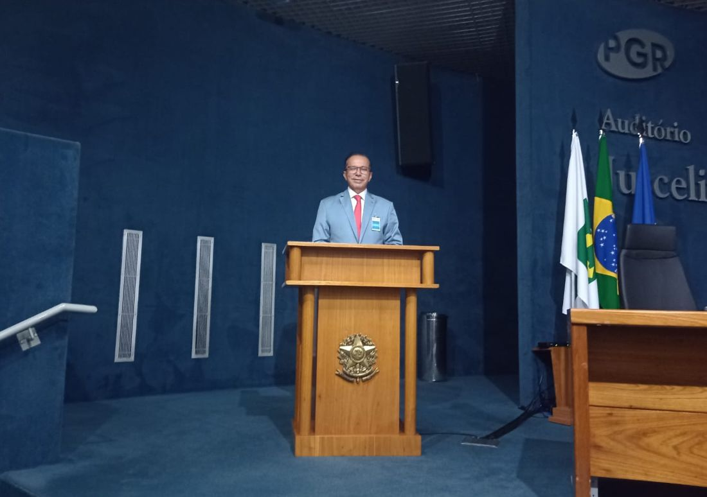
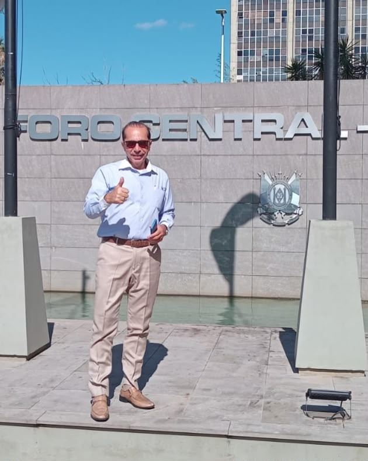
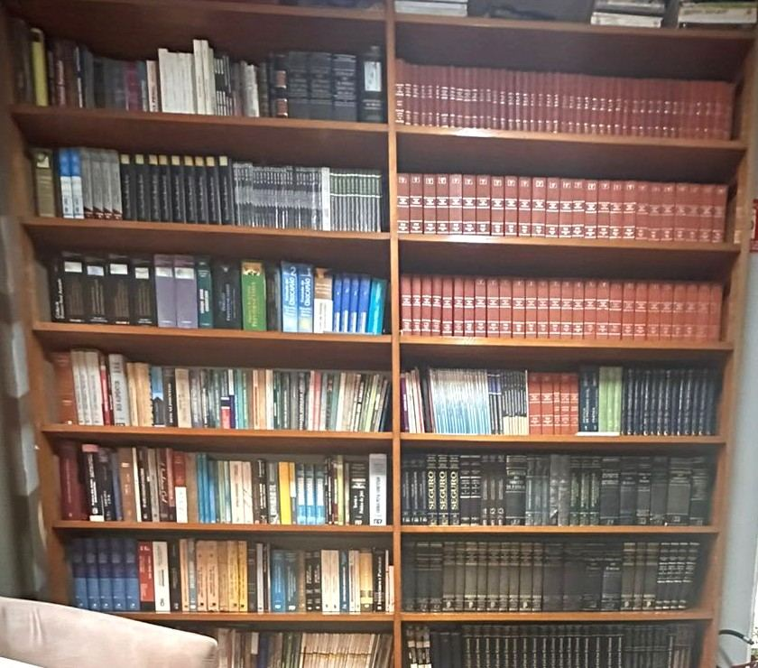

Dr. Antonio Correia atua há 15 anos na defesa criminal, do flagrante na delegacia ao julgamento nos tribunais. Atendimento 24 horas, direto com o advogado e com total sigilo.
Há 15 anos o Dr. Antonio Correia atua na advocacia criminal em São Paulo. Seu trabalho começa no momento mais delicado, muitas vezes ainda na delegacia, e segue até a última instância, com acompanhamento pessoal de cada caso.
Pós-graduando em Direito Penal e Processo Penal pela Escola Paulista de Direito (EPD), alia atualização técnica constante à experiência prática nos fóruns e tribunais.
Da investigação à execução da pena, cada fase exige uma estratégia própria. O acompanhamento é contínuo e personalizado.
Acompanhamento imediato na delegacia e na audiência de custódia, com pedido de liberdade provisória quando cabível.
Orientação antes de depoimentos e intimações, acesso aos autos e atuação ainda na fase de investigação.
Defesa técnica completa em audiências, alegações e julgamentos, inclusive no Tribunal do Júri.
Medida urgente contra prisões e constrangimentos ilegais, impetrada nos tribunais.
Análise de condenações já definitivas para buscar sua revisão quando há fundamento legal.
Progressão de regime, livramento condicional, saídas temporárias e demais direitos durante a pena.
As primeiras horas após uma prisão são decisivas. Ter um advogado presente desde o início faz diferença na proteção dos direitos de quem foi detido.
Informações gerais. Cada caso é analisado individualmente pelo advogado.



O plantão 24 horas funciona porque o Dr. Antonio conta com uma equipe de apoio dedicada a cada caso.
Responsável pela estratégia e pela defesa em todas as fases do processo.
Integra a equipe do Dr. Antonio Correia no apoio e acompanhamento dos casos.
“Conheço o Dr. Antonio como parceiro e amigo. É um profissional sério, dedicado e que trata cada caso com seriedade e respeito. Recomendo com confiança.
Silvio de Oliveira · Parceiro e amigo
Não encontrou sua dúvida? Fale diretamente com o Dr. Antonio.
Tirar minha dúvidaSim. Prisões em flagrante e situações urgentes podem acontecer a qualquer hora, por isso o Dr. Antonio e sua equipe mantêm plantão 24 horas pelo WhatsApp e telefone (11) 94708-2725.
Sim. É comum que pais, cônjuges ou filhos façam o primeiro contato. O advogado então vai até a pessoa detida para orientá-la e assumir a defesa.
É altamente recomendável. Comparecer acompanhado e orientado antes do depoimento evita declarações que possam prejudicar você, seja como investigado ou testemunha.
Sim. Tudo o que é relatado ao advogado é protegido pelo sigilo profissional garantido pelo Estatuto da Advocacia.
Você chama no WhatsApp ou liga, conta brevemente a situação e o Dr. Antonio explica os caminhos possíveis e as próximas etapas para o seu caso.